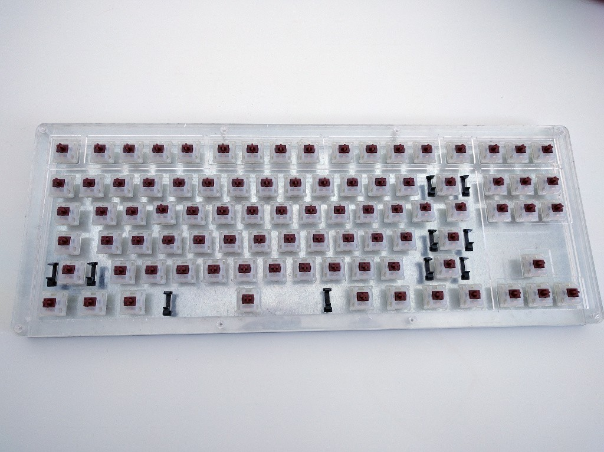
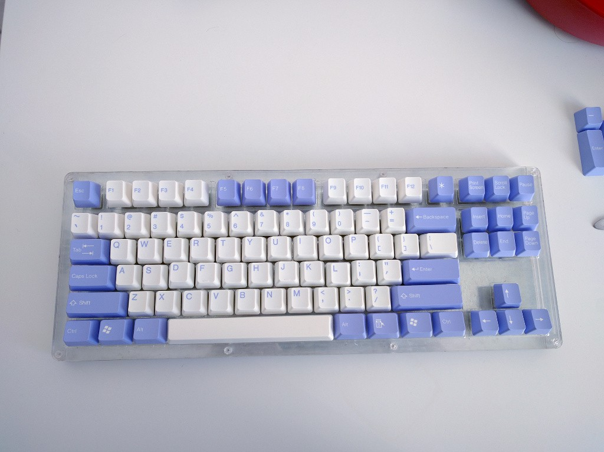

Switches and Keycaps¶
Published on 2015-12-17 in Alpen Clack.
The Gateron switches and the keycaps that I ordered on Massdrop finally arrived. The switches fit nicely:
And the with the keycaps:
I still have two problems to solve, though. First, while the switches fit, they are not particularry well kept in place by their snaps, which apparently are designed for a thinner board. I will need to hold them in place with something. Second, the acrylic sheet on which they sit is really flimsy. I will either need to find something more robust, or have them touch the back plate for stability. We will see how it develops.